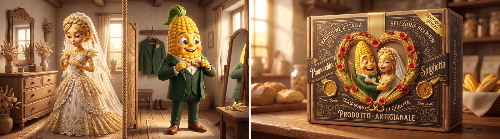
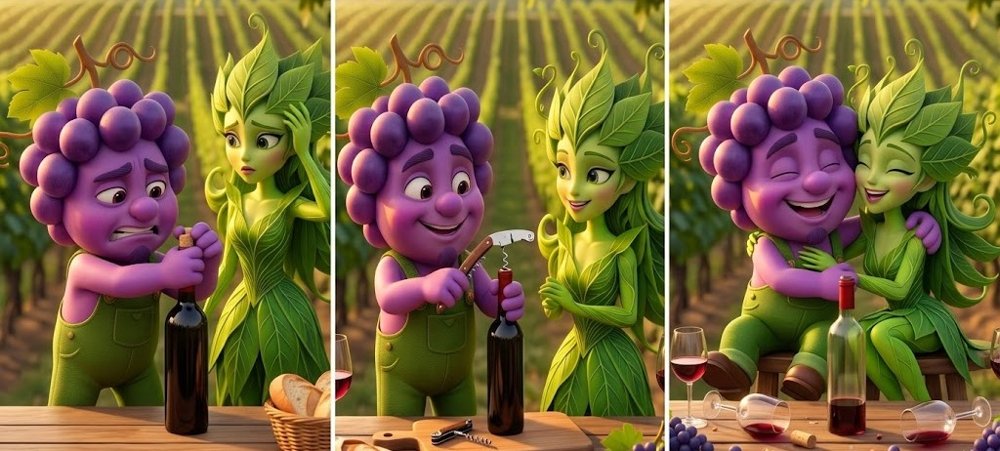

Claude + Gemini API · Dynamic Creative Optimization · PIPELINE & QA
DCO: One Pipeline, Many Products
Dynamic Creative Optimization (DCO) stops being a single-brand exercise the moment an agency or a brand needs to run it across more than one mascot pair, more than one product line, or more than one market at once. The Engine: generation, control, export covers the mechanism itself — one brand, one mascot pair, the generate → judge → correct loop that keeps every shot on-brand (built on Claude and the Gemini API). This post assumes that mechanism and asks what changes once it's pushed past a single brand: what a second mascot pair actually costs to add, why a shared pipeline needs a per-brand configuration file to stay trustworthy (shown on two real brands), and whether that file, together with the abstraction already built into the loop, is enough to carry it across products — or whether the kind of campaign and the kind of brand change what has to be checked. The market side of the question has its own posts: DCO and the Agency Market and The Agency Channel in Italy.
-
01
Why this matters for a multi-product catalogue
A food company rarely sells one product. A cake line sits next to jams, honey, preserves — a forest-fruit jam is not a large creative leap from a cake, but under a conventional production process it's still a separate photoshoot or a separate illustration commission, with its own cost and its own lead time. With a character-consistency pipeline that is already built, a jam-adjacent pair is a second reference pair and a reused pipeline: the generation, staging and judging steps don't need to be rebuilt, only re-pointed.
That claim holds cleanly only while the new pair stays inside the same world as the first — same mood, same palette family, same kind of setting. Even then, "re-point the pipeline" says nothing about what should stay standard across a brand's own story once its own briefs start pulling in different directions. The missing piece is a configuration file: one per brand, sitting alongside the reference images rather than buried in any single shot's brief, that fixes the identity assertions the judge (step D of the loop) checks every shot against, the product the story is about, a palette and rendering-style anchor, the setting vocabulary allowed for that brand, and the narrative register it's allowed to swing across.
The next chapter writes that file out for two brands from this site — a farm and a winery — and uses them to show what is reused when a second brand arrives and what is not. The third asks how far that carries: whether the configuration file and the abstraction already in the loop are enough for other products, or whether the kind of campaign and the kind of brand change what has to be checked. The market side — which buyers pay for closed-loop QA, and the case for a flexible service — now lives in DCO and the Agency Market and The Agency Channel in Italy.
Multi-product is also where the export layer earns its keep. Every row the engine ships carries its own brand and product-line key, so one run across four product lines does not come back as four folders somebody has to sort by hand: it comes back as one manifest the agency can filter by line, by slogan or by format, and hand to the platform a slice at a time. The column scheme is in The Engine: generation, control, export, chapter 06.
-
02
Two brands, one pipeline: what is reused and what is not
Two brands from this site make the reuse question concrete. Pannocchino e Spighetta are the farm mascots of a cake line (the wedding below is from Automatic Storyboard: Meet Pannocchino e Spighetta); Grappolotto e Foglina, a grape and a vine leaf, are the mascots for a professional wooden corkscrew, sold by a brand kept deliberately anonymous — the real campaign images were digitally de-branded for copyright, and the configuration file below keeps that same choice rather than inventing a fake brand name. They are close in register — warm, artisanal, food-and-drink — but the characters, the settings and the product are all different, which makes them a fair test: the pipeline is the same, the brand is not. Below, each brand with the configuration file that would sit next to its reference images.

Brand A — the farm: Pannocchino e SpighettaThe reference pair of a cake line, getting ready for the farm wedding — golden-hour light, a warm rural setting, a storybook register — next to the product the story is for: the Torta Spighetta wedding edition. Everything D has to check in a shot like this — who the two characters are, what they wear, which product is in frame, which settings and colours belong to this brand — is written in the file below. // brand_config.json — Brand A: Pannocchino e Spighetta, the farm (torta-spighetta) { "brand": "torta-spighetta", "identity_assertions": { "LEFT": "Pannocchino: corn-cob body, green leaf tuft, green overalls, brown boots", "RIGHT": "Spighetta: braided wheat updo with ears, red gingham dress, straw limbs" }, "product": { "name": "Torta Spighetta", "editions": ["Nozze", "Nascita"], "pack": "kraft-brown box, gold-foil wheat-and-poppy wreath" }, "palette": ["warm sunset gold", "wheat yellow", "poppy red", "kraft brown"], "style": "storybook 3D, soft golden-hour light", "settings_allowed": ["wheat field", "farmhouse yard", "barn courtyard", "kitchen"], "register": ["warm", "rural", "affectionate"], "slogans": { "Nozze": [ { "en": "Two cereal species, one field of affection", "it": "Due specie di cereali, un solo campo d'affetti" }, { "en": "Different in origin, united to sweeten us", "it": "Diversi per origine, uniti per addolcirci" } ], "Nascita": [ { "en": "Come wind, come rain, we'll feast on the grain", "it": "Con sta pioggia e con sto vento, ce magnamo sto frumento" }, { "en": "Soaked by rain or kissed by sun, a good harvest goes to anyone who wants one", "it": "Bagnato di pioggia o baciato dal sole, un buon raccolto se lo prende chi vuole" } ] } }
Brand B — the winery: Grappolotto e FoglinaA three-beat mini-story about opening a bottle: on the left, Grappolotto struggles bare-handed while Foglina watches, puzzled; in the center, they reach for the corkscrew; on the right, they enjoy the evening, tipsy and happy, with the empty bottle and glasses on the table. New cast, new setting, new product — same generate → judge → correct loop, driven by a different file. // brand_config.json — Brand B: Grappolotto e Foglina, the winery (brand kept anonymous, see chapter text) { "brand": "anonymous", "identity_assertions": { "LEFT": "Grappolotto: purple grape-cluster head, small goatee, olive-green overalls with copper buttons, brown boots", "RIGHT": "Foglina: green vine-leaf crown, long curling-tendril hair, leaf dress" }, "product": { "name": "professional wooden corkscrew", "model": "branded model only; never a generic or antique stand-in" }, "palette": ["golden-hour olive", "grape purple", "terracotta", "stone brown"], "style": "storybook 3D, soft golden-hour light", "settings_allowed": ["terraced vineyard", "stone wall", "cellar", "grape-pressing yard", "harvest-festival courtyard"], "register": ["warm", "artisanal", "convivial"], "slogans": [ { "en": "With Foglina among the rows and Grappolotto down by the vine, the harvest gives us a wonderful wine!", "it": "Con Foglina tra i filari e Grappolotto giù nel tino, la vendemmia ci regala un grande vino!" }, { "en": "Between a cow who's had many booze, and a cheeky little vine, Grappolotto and his girl are raising a glass of wine!", "it": "Tra una mucca che sbevazza e un germoglio birichino, Grappolotto e la sua bella fanno festa col buon vino!" } ] }Read side by side, the two files have identical keys and different values — that shared schema is the only thing the loop needs to know how to read, and it is what lets the same pipeline run both brands unmodified. The anatomy of the file field by field, what exactly is reused from one brand to the next, and the real cost of onboarding a second brand are broken down at the configuration-file level in DCO Engine: technical description.
-
03
How many checks are needed? Configuration, products and the kind of campaign
The previous chapter showed what a second brand needs: a configuration file, a reference pair and a new calibration set. A prior question remains, though: is that enough to check the quality of a different product, or does the level of abstraction already built into the pipeline's design suffice on its own? The answer runs in two directions. The generate → judge → correct loop does not know what a product is: it reads a schema and checks every shot against the assertions written there, which is why it can adapt to a cake line just as it does to a corkscrew. Within a family of products and brands that belong to the same merchandise category, share the same register, and run the same type of campaign (e.g. mascots) — the configuration file is sufficient.
Where something can be lacking is not the loop's own checking, but the staging. A cake box, a bottle and a corkscrew are placed in a scene in different ways, and they play different roles. A small library of staging templates by product category is needed, to allow for some flexibility of variants here — an open problem listed in DCO Engine: technical description.
The second limit is more cumbersome, and it concerns checks rather than generation. How closely a campaign has to be controlled is not the same for every product. A healthcare campaign, or one for children's products, carries many more checks than a campaign for a pair of socks: more assertions for the judge to verify (what may be shown, claimed or implied), less tolerance for a shot that merely looks “good enough”, and more supervised interventions — human checkpoints that are not optional and cannot be sampled away. The loop is the same, but the configuration is richer and the human share is larger.
This points to a connection that the configuration file alone does not capture: the one between the type of campaign and the type of brand. A storybook mascot pair is at home in a campaign for a food brand — tone, setting and product agree — and much less so when the subject calls for a particular register or heavy supervision. The file describes the brand; it does not say which kinds of campaign that brand can credibly carry, nor which control profile each one requires.
Builds on: The Engine: generation, control, export — one brand, one mascot pair, and the generate → judge → correct loop that keeps every shot on-brand, which this post takes past a single brand.
The market side: DCO and the Agency Market, The Agency Channel in Italy.